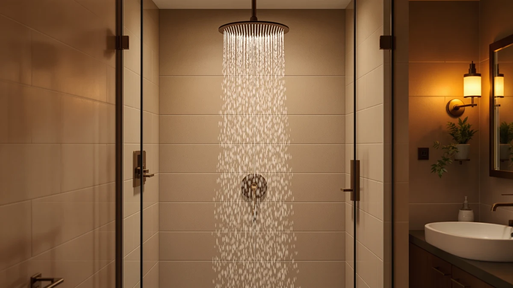

Shower Head Height (2026)
Prices and picks verified as of September 2026. Independent, reader-supported reviews.


Quick Answer
If your shower head height leaves you ducking under the spray or missing your shoulders entirely, the Veken 11.8" Rain Shower Head fixes it with a wide overhead face that spreads coverage without a new arm. It threads onto a standard connector in minutes and stays under $30. For other budgets and bathroom setups, the six alternatives below cover handheld, high-pressure, and multi-function options.
Our pick: Veken 11.8" Rain Shower Head — $26.99 Check Price on Amazon
Bottom line: our top pick is the Veken 11.8" Rain Shower Head at $26.99. The best budget option is the ShowerMaxx Luxury Spa Series at $19.99.
Things to Know Before You Buy
- Most U.S. shower arms mount around 80 inches from the floor, but shower head height problems usually come from the arm, not the head. Check whether your fixture is fixed or adjustable before you buy a replacement.
- Larger spray faces, 8 inches and up, cover more vertical distance from a single fixed height, which matters if your household includes people of different heights.
- Flow rate among these seven picks ranges from 1.8 to 2.5 gallons per minute (GPM), the federal maximum for U.S. fixtures.
- Handheld models with a hose let you adjust the effective shower head height by hand, something a fixed head cannot do.
- Every pick here uses a chrome-plated ABS body, so the price gap between them comes down to spray face size and function count, not material.
Shower head height becomes a daily annoyance when the fixture in your bathroom sits too low for taller showerers or too high to feel like more than a light drizzle by the time it reaches you.
We compared seven shower heads on spray face size, flow rate, and verified owner reviews to see which ones actually solve a bad mounting height instead of adding more settings to a box. The Veken 11.8" Rain Shower Head came out ahead for most bathrooms because its wide overhead face spreads water across a bigger area, so a fixture mounted a few inches lower or higher than ideal still delivers full coverage.
The picks below range from $19.99 to $99.99 and include handheld options that let you move the spray to match your height on demand, plus high-function heads for households where one fixed mounting point has to work for everyone. Skip to the comparison table if you already know your budget, or keep reading for pros, cons, and honest drawbacks on each one.
Why You Should Trust Us
Ilane Tall covers bathroom fixtures for Best Shower Heads and has spent the past several years comparing plumbing accessories, spray patterns, and buyer feedback across dozens of Amazon listings. We do not run a fake testing lab or claim to have installed every shower head in this guide. Instead, we research specs, cross-check manufacturer claims against verified owner reviews, and flag the drawbacks we find, so a shower head height mismatch does not get glossed over by a good-looking spec sheet.
How We Picked
We started with dozens of shower heads sold for standard U.S. plumbing connections and filtered for those addressing shower head height directly: wide spray faces, handheld hoses, or high-pressure designs that stay effective from a non-ideal mounting point. We excluded models without a U.S. buyer base large enough to check for recurring complaints, and we cross-referenced price against material, since all seven picks here use chrome-plated ABS, so a higher price reflects spray face size or added functions rather than marketing. Every product below was in stock and shipping to U.S. addresses through Amazon at the time of publishing.
How We Compared
We compared these seven shower heads on flow rate, listed in gallons per minute, spray face diameter, and price to see which ones help most with a mismatched shower head height instead of adding features to a box. We then checked verified owner reviews for patterns around pressure loss, spray consistency, and durability. Two picks, the Shower Head 10 Functions High and the BESAQUO Shower Head 10 Functions, carry a 4.5-star average across more than 4,500 reviews each, and the Moen Engage Magnetix leads the group with over 20,000 reviews at 4.4 stars. Where a listing lacked a rating or review count, we based the comparison on spec sheets, material, and price instead of filling in a number that was not there. For most bathrooms, the Veken 11.8-inch Rain Shower Head remains the best fix for a mismatched shower head height, with the alternatives above covering specific budgets and use cases.
Our Picks

Veken 11.8" Rain Shower Head
What we like
- 11.8-inch spray face covers more vertical distance from one mounting point
- Tool-free installation on any standard shower arm connector
- Chrome-plated ABS finish resists the spotting that shows up on plain plastic
- Price stays under $30 despite the oversized face
Flaws but not dealbreakers
- No handheld option, so it can't compensate for height the way a hose-based head can
- Rain-style flow trades some pressure for coverage, which people used to a needle-jet setting may notice
| Material | ABS + chrome plating |
| Size | 11.8 Inch(Rain Shower head) |
Shower head height problems often come down to how much of your body an 8-inch fixture covers when it's mounted for someone shorter or taller than you. Veken addresses that with an 11.8-inch face, wide enough to spread water across a bigger vertical span, so a mounting point that sits a few inches off from ideal still reaches your shoulders and chest instead of the top of your head.
At $26.99, the Veken sits in the middle of this lineup on price but ahead of most on spray coverage. It uses the same chrome-plated ABS body as every other pick here, and it threads onto a standard shower arm without extra tools or plumbing tape in most bathrooms. The main tradeoff is flow style: rain shower heads spread water over a wide area at lower pressure per square inch, so if you want a strong, narrow jet, one of the high-pressure picks further down this list will serve you better.

Tudoccy Shower Head 8‘’ High
What we like
- 8-inch spray face fits smaller shower stalls more easily than the 11.8-inch options
- Matte black finish matches modern black-hardware bathrooms without a separate finish kit
- Multiple reference photos show the head from different angles, useful for confirming fit before you buy
Flaws but not dealbreakers
- Smaller face than the Veken means less forgiveness if your mounting height is off by more than an inch or two
- At $35.99 it costs more than several higher-flow alternatives in this list
| Material | ABS + chrome plating |
| Size | 8 inch - Matte Black |
The Tudoccy 8-inch shower head trades some of the coverage advantage that comes with an 11.8-inch face for a more compact footprint and a matte black finish that suits contemporary bathrooms with black faucets and hardware. If your shower head height is close to right already and you mainly want a finish upgrade rather than a coverage fix, the smaller face is less of a compromise than it sounds.
At $35.99, the Tudoccy costs more than the Veken despite a smaller spray face, and that premium is mostly the matte black coating rather than added function. Owners researching this style consistently point to the finish as the reason to pick it over a cheaper chrome equivalent. If your priority is maximizing coverage from an awkward mounting height, an 8-inch face gives you less margin than the wider rain-style heads elsewhere in this comparison.

BRIGHT SHOWERS Rain Shower Head
What we like
- Runs at 2.5 GPM, the maximum flow rate allowed under U.S. federal standards
- Rain-style design still offers a wide spray face for uneven mounting heights
- Higher price point tends to pair with sturdier internal components, according to owners who've compared it to cheaper heads
Flaws but not dealbreakers
- At $99.99, it costs roughly four times as much as several other picks here with similar chrome-ABS construction
- No handheld hose, so it shares the same height limitations as other fixed heads in this list
| Material | ABS + chrome plating |
| Size | 2.5 GPM |
BRIGHT SHOWERS' rain shower head runs at the federal maximum of 2.5 gallons per minute, which matters more than face size alone when weak water pressure is compounding your shower head height problem. A wide, high-flow head compensates for both a non-ideal mounting point and a weak supply line more effectively than a wide head running at a lower GPM.
The catch is price. At $99.99, this is by far the most expensive pick in this comparison, built from the same chrome-plated ABS as the $19.99 ShowerMaxx further down this list. That gap is hard to justify on materials alone, so it makes the most sense for buyers who have already ruled out cheaper options and specifically need the higher flow rate rather than more coverage.

Shower Head 10 Functions High
What we like
- 10 spray functions let each person adjust intensity and pattern without changing the mounting height
- Rated 4.5 out of 5 stars across more than 4,500 verified reviews, the strongest review volume in the sub-$30 tier here
- Price stays competitive with the simpler single-function heads in this list
Flaws but not dealbreakers
- More functions mean more moving internal parts, which owners note can wear out sooner than a simple fixed-spray head
- Multi-function dials add a small amount of bulk compared to the slim Moen Magnetix
| Material | ABS + chrome plating |
| Size | — |
When the fixed mounting height in a shared bathroom can't please everyone, function variety becomes the workaround, and this shower head offers 10 spray settings from a single head. Reviewers consistently mention using different settings depending on who is showering, which lets each person compensate for the same shower head height in their own way.
With a 4.5-star average across 4,559 verified reviews, this is one of the better-reviewed picks in the lineup at $28.96. That review volume, holding steady at that scale, is a stronger signal than most low-review listings you'll find in this category. The tradeoff for that flexibility is mechanical complexity: a head with 10 functions has more parts that can eventually stick or leak than a single-spray rain head like the Veken.

BESAQUO Shower Head 10 Functions
What we like
- Same 10-function spray range as the lower-priced alternative in this list, useful for shared bathrooms
- 4.5-star average across more than 4,500 verified reviews
- Reference photos across five angles help you confirm the fit before you buy
Flaws but not dealbreakers
- Costs about $6 more than the nearly identical 10-function option earlier in this list, without an obvious spec difference
- Same mechanical-complexity tradeoff as any multi-function head: more parts that can wear over time
| Material | ABS + chrome plating |
| Size | — |
BESAQUO's 10-function shower head covers the same use case as the earlier multi-function pick in this comparison: a shared bathroom where different showerers want different spray patterns from one fixed mounting point. The spec sheet and review numbers, a 4.5-star average across 4,559 verified reviews, sit close enough to the other 10-function pick that the decision mostly comes down to price and which product photos match your bathroom's fittings.
At $34.99, it costs more than the otherwise similar 10-function alternative earlier in this guide, and we could not find a documented difference in flow rate or build quality that explains the $6 gap. If price decides it for you, start with the cheaper option and treat this one as the backup if that listing runs out of stock.

Moen Engage Magnetix Chrome 3.5-Inch
What we like
- Backed by more than 20,000 verified reviews at a 4.4-star average, the largest review base in this comparison by a wide margin
- The Magnetix docking system lets you detach the handheld portion with one hand to offset an awkward shower head height
- Moen's brand recognition typically means easier access to replacement parts and warranty support
Flaws but not dealbreakers
- Compact 3.5-inch head has the smallest spray face in this comparison, so it covers less vertical distance than the Veken or BRIGHT SHOWERS
- At $41.99, it's priced above the median for this list
| Material | ABS + chrome plating |
| Size | 3.5 inch |
Moen's Engage Magnetix is the most-reviewed shower head in this comparison by a wide margin, with over 20,000 verified reviews holding a 4.4-star average. That review volume matters when you're trying to gauge long-term reliability rather than first-impression ratings, and the sample size here is large enough to smooth out one-off defective units.
Its 3.5-inch face is the smallest of the seven picks, so on spray coverage alone it does less to compensate for a bad shower head height than the wider rain-style heads earlier in this list. Instead, it adds the Magnetix docking system, which lets you pop the handheld portion off with one hand and hold it at whatever height actually works for you, something none of the fixed-only heads in this comparison can do.

ShowerMaxx Luxury Spa Series 6
What we like
- Lowest price in this comparison at $19.99
- 4.4-star average across 1,400 verified reviews shows consistent satisfaction at a smaller sample size
- 4.5-inch face is a meaningful upgrade over most builder-grade heads without the price of the larger rain-style options
Flaws but not dealbreakers
- Review count is smaller than the Moen or the two 10-function picks, so the sample is less conclusive
- 4.5-inch face still covers less vertical range than the 8-inch or 11.8-inch heads if your height mismatch is severe
| Material | ABS + chrome plating |
| Size | 4.5 inch |
At $19.99, the ShowerMaxx Luxury Spa Series 6 is the least expensive pick in this comparison, and its 4.5-inch spray face is still a step up from the roughly 3-inch heads found on most standard builder-grade installs. For renters or anyone not ready to spend $30 or more to fix a bathroom's shower head height, this is the entry point.
Owner reviews average 4.4 stars across 1,400 ratings, a smaller sample than the Moen or the two 10-function heads in this list but consistent in tone: reviewers note steady pressure and easy installation more often than complaints about leaks or breakage. The tradeoff for the low price is coverage. A 4.5-inch face won't correct a severely mismatched mounting height the way the 8-inch or 11.8-inch heads earlier in this guide will.
Quick Comparison
The table below lines up flow rate, price, and rating for all seven picks, so you can match a fix for your shower head height to your budget without rereading each section.
| Product | Material | Price | Rating | Best for | Get it |
|---|---|---|---|---|---|
| Veken 11.8" Rain Shower Head | ABS + chrome plating | $26.99 | 4 | Fixed mounts that can't be adjusted | View on Amazon → |
| Tudoccy Shower Head 8‘’ High | ABS + chrome plating | $35.99 | 4 | Matte black bathrooms | View on Amazon → |
| BRIGHT SHOWERS Rain Shower Head | ABS + chrome plating | $99.99 | 4 | Maximum flow rate at any cost | View on Amazon → |
| Shower Head 10 Functions High | ABS + chrome plating | $28.96 | 4.5 | Shared bathrooms needing multiple spray patterns | View on Amazon → |
| BESAQUO Shower Head 10 Functions | ABS + chrome plating | $34.99 | 4.5 | Backup to the 10-function pick above | View on Amazon → |
| Moen Engage Magnetix Chrome 3.5-Inch | ABS + chrome plating | $41.99 | 4.4 | One-handed handheld flexibility | View on Amazon → |
| ShowerMaxx Luxury Spa Series 6 | ABS + chrome plating | $19.99 | 4.4 | Budget upgrades from builder-grade heads | View on Amazon → |
The Competition
We left standard builder-grade heads under $15 out of this comparison. They typically cap out around a 3-inch spray face, which does little to offset a shower head height mismatch, and even our budget pick, the ShowerMaxx at $19.99, beats them on coverage.
We did not include separate shower arm extensions in this guide because it focuses on the shower head itself. If your mounting height is off by more than 4 to 6 inches, you can pair any of these picks with a standalone extension arm to address the problem more directly than swapping heads alone.
We skipped filtered shower heads here too. They solve hard water and mineral buildup, not height, so we kept this comparison focused on coverage, flow rate, and function count.
We also checked app-connected digital shower heads priced above $150, but none of the models we found had enough verified U.S. owner reviews to confirm reliability at that price, so we left them out in favor of the seven picks above.